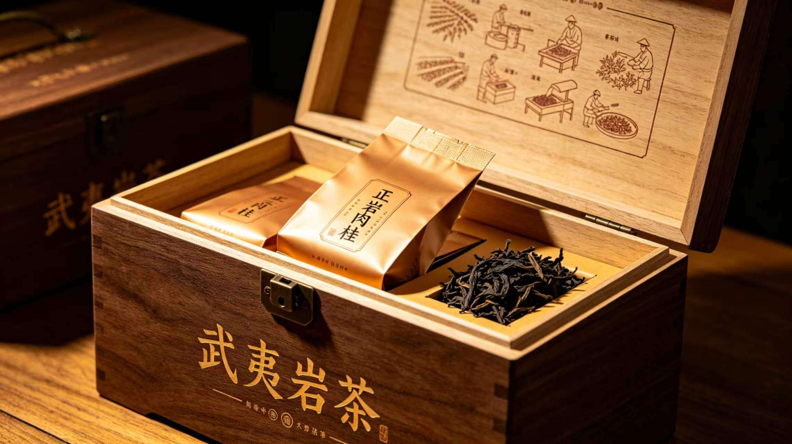
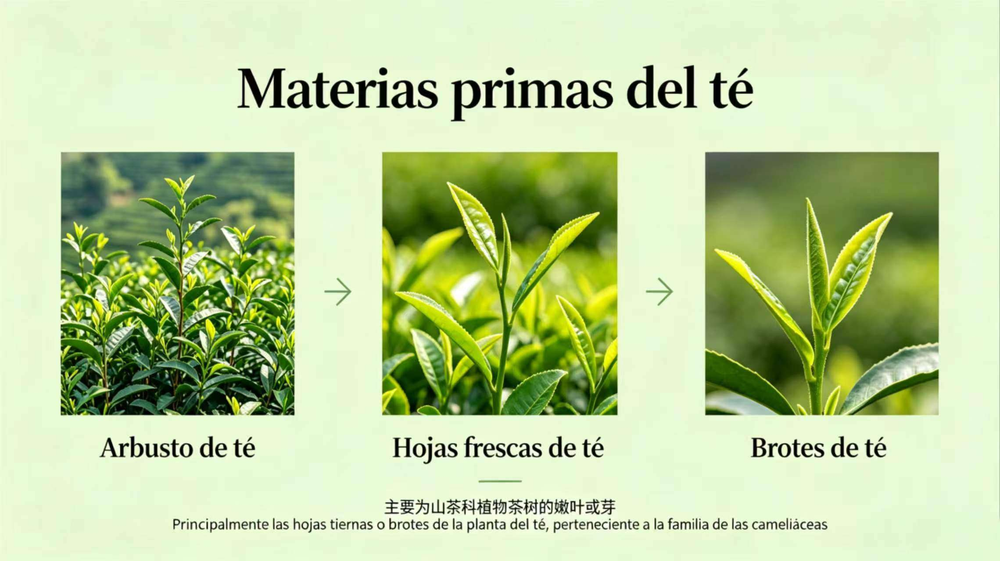
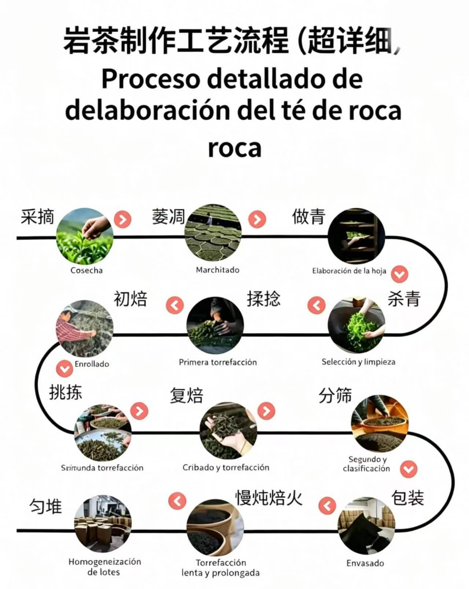
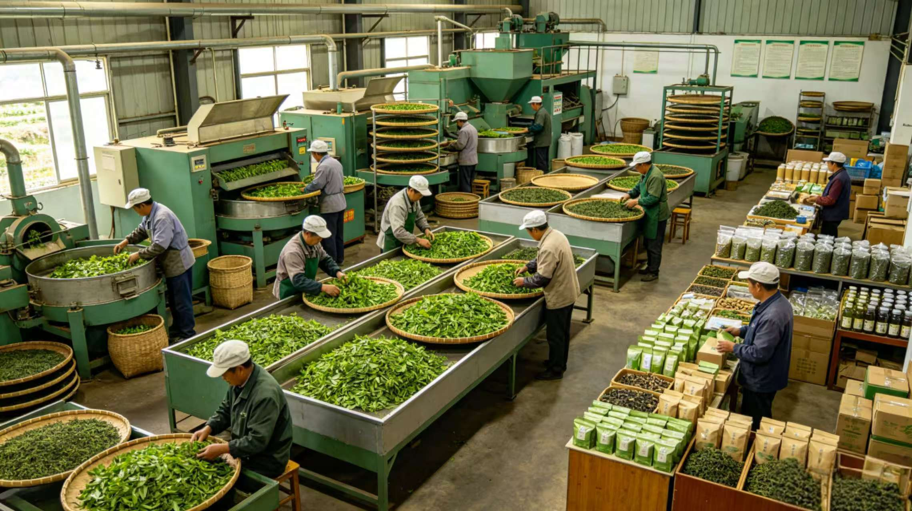
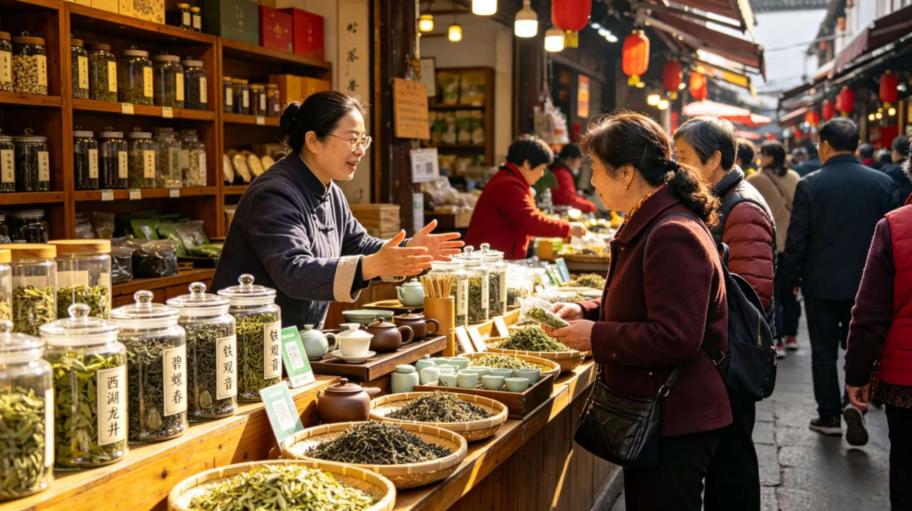
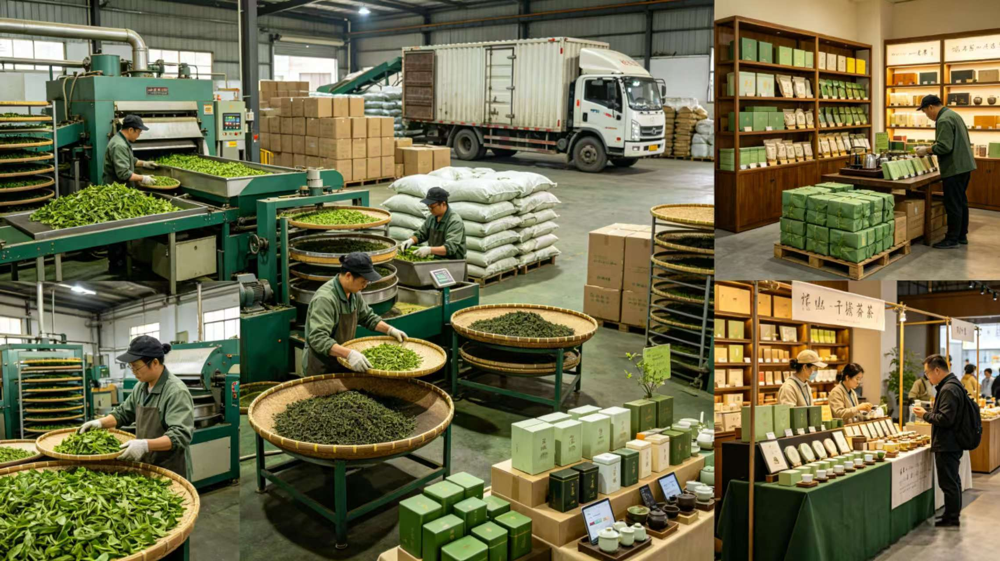
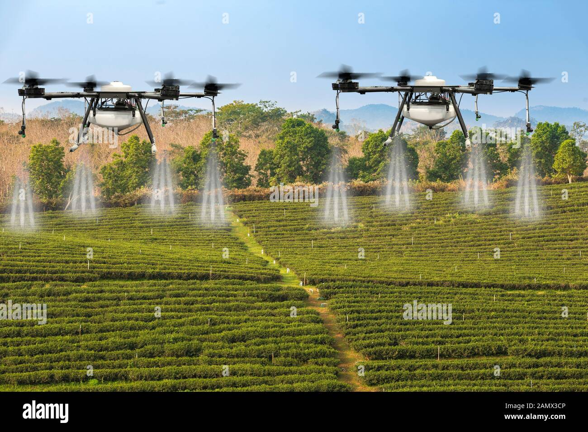
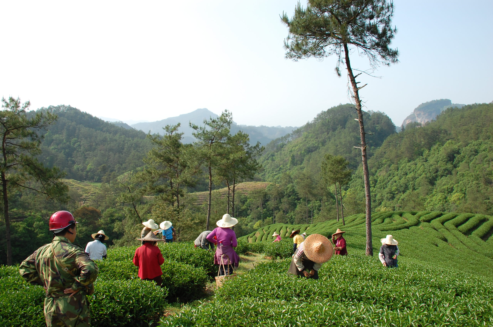
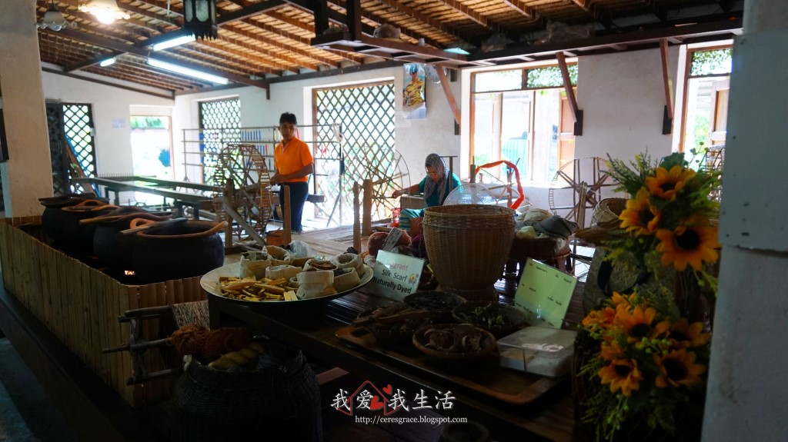

Circuito Productivo del Té de Roca (Wuyi)
武夷岩茶产业回路

Las Montañas Wuyi ofrecen un microclima único. El suelo mineral y la niebla de los bosques de bambú definen el sabor "Yan Yun".
武夷山拥有得天独厚的微气候。富含矿物质的土壤与竹林的晨雾共同铸就了独特的“岩韵”。
Se utilizan brotes tiernos y hojas frescas seleccionadas a mano.
仅使用纯手工精心挑选的鲜嫩茶芽与茶叶作为原料。

Ubicación: Extraído y procesado en la provincia de Fujian. Viaja a los grandes puertos internacionales de Xiamen y Fuzhou.
定位与港口：采摘与加工均在福建省。成品茶叶随后通过陆路运输至厦门港和福州港出海。
Mercados Externos: Se exporta masivamente a Rusia, Japón, Estados Unidos y la Unión Europea.
出口市场：除国内消费外，产品还大量出口至俄罗斯、日本、美国及欧盟国家。
(Vista satelital de la provincia de Fujian y sus montañas rocosas)
(福建省卫星地图及岩茶产区山脉)

Un proceso tradicional no mecanizado masivamente: marchitado, oxidación (Zuo Qing), enrollado y tostado lento sobre carbón.
非大规模机械化的传统工艺：包含萎凋、控氧发酵（做青）、揉捻及炭火慢焙。


De la montaña al consumidor: El té se distribuye en mercados tradicionales chinos y mediante grandes cadenas modernas. Este sector genera un inmenso impacto económico y empleo indirecto.
从茶山到茶杯：产品在传统茶铺及现代连锁店中销售。第三产业创造了巨大的经济效益与间接就业。

¿Commodity o Specialty?: Es un Specialty. Su precio depende del "terroir" y el trabajo artesanal, no cotiza genéricamente en la bolsa.
大宗还是精品？属于精品（Specialty）。其价值取决于特定风土与纯手工技艺，不作为大宗商品在交易所定价。
Derivados: Té frío embotellado, cosméticos y suplementos de salud (polifenoles).
衍生品：即饮冷泡茶饮料、含茶多酚的化妆品与保健品。
Sector Cuaternario (I+D): Uso de drones agrícolas para monitorear el clima y biotecnología para el estudio genético del té.
第四产业科研：包括利用现代农业无人机进行实时气候监测，以及利用生物科技改良茶树基因。

Recolectores: Trabajo estacional muy intenso en las montañas durante la primavera. Físicamente agotador.
采茶工：春季采摘期面临极高强度的山区体力劳作，属于极其辛苦的季节性工作。
Maestros Tostadores: Trabajo de alta presión técnica. Deben soportar el calor de las brasas y hacer largos turnos nocturnos para vigilar el fuego.
制茶师傅：高压技术工种。需要忍受炭火高温，并常常通宵熬夜监控火候变化。


Sistema de Integración: El circuito productivo no está monopolizado por una sola entidad, sino que funciona en red.
整合系统：生产回路并非由单一实体垄断，而是通过网络协同运作。
"中国人喝的是闲情雅致，品的是世外桃源。这一杯武夷岩茶，不只是大地的芬芳，更是岁月的沉淀与山水的共鸣。"
(Traducción: "Los chinos beben la tranquilidad y la elegancia, saboreando un paraíso terrenal. Esta taza de té de roca de Wuyi no es solo la fragancia de la tierra, sino también la esencia del tiempo y la resonancia de las montañas y los ríos.")
— El Espíritu del Té
— 茶之精神
Una fusión de culturas: Del mate al té de roca.
文化的交融：从阿根廷马黛茶到中国武夷岩茶。
Fin de la Exposición (Haz clic en la imagen)
展示结束 (点击图片可放大)